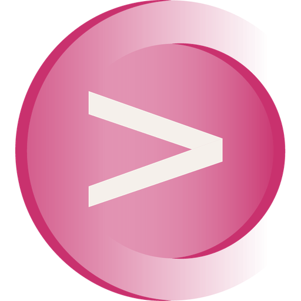

Actionable × Focus4ward · Stage 2 proposal
Collaboration proposal · Stage 2 — Build & Scale
Prepared by Miri Blum, Focus4ward · for Nicolas Rieul, Co-Founder & Co-CEO, Actionable · August 2026
A follow-up to the marketing audit presented August 12
You validated the audit direction on August 12 and asked for one document for your ARR-plan re-sync: timeline, budget, roles and KPIs, events included, and clearly what's mine to run versus what isn't.
September to December, then how the work continues into 2027. Sequenced from the 30/60/90 in the audit.
What buys what: my retainer, freelance resources, activities and tools, one-off projects.
Who does what, who I'm accountable for, and how we'll know it's working.

Your own ARR plan puts one number under the €7M target: pipeline needs to reach ~€8.5M a year, roughly 2.7x today's rhythm. Founder-carried acquisition built the first €1.7M. It doesn't 2.7x on its own, and building toward that gap, alongside sales, is what this engagement is for.
Your assumption, not mine to guarantee. It also assumes a very high close rate on that pipeline.
From your own ICP work: 80 real Tier 1-2 accounts out of 340 in France. Small enough to name, big enough to need a system.
You're a known name in French retail and CX. That 2.7x is built on France. It's a different, likely bigger, pipeline ask outside it.
One more honest flag: 80 named accounts is not 80 equal outcomes. A small number of large accounts, as S1 already shows, can carry most of the ARR. Worth watching, not something either of us can size precisely yet.
Some of this pays back inside FY2026. Some compounds into 2027. You already know rebrand and SEO/GEO take longer, this just sequences everything against that.
We're drawing on a track record with comparable B2B enterprise sales-led motions (Aprovall and others), pattern-matched, openly labeled as that, not an Actionable prediction. What's still missing is Actionable-specific history: average basket, product roadmap, how upsell moves the number, which is why this isn't a worst/mid/best forecast dressed up as fact.
Opportunities, not closes: we don't own whether a deal closes, and this is the same language sales already uses.
Secondary metrics that show us day to day whether we're on track. They support the two primary numbers, they don't replace them:
This is what we're aiming for. It depends on the support I get, freelance and agency availability, and decisions on your side, a real plan, not a fixed schedule.
As we said: the job isn't adding events, it's maximising each one commercially. Target accounts, invitations, outreach before, testimonials during, systematic follow-up after.
| Date | Moment | Status | Budget |
|---|---|---|---|
| Sept 9 | Funding announcement + press release | Planned | — |
| Sept 10 | Client event, new offices | To confirm | — |
| Sept 23 | CX breakfast, Carré Édouard VII | Confirmed | ~€10K |
| Oct 1 | Vertone B2B CX lab + Google Startup Day | Confirmed | — |
| Oct 5 | Palmes de la Relation Client, AFRC | To explore fast | — |
| Oct 6-8 | One to One IA x Expérience Client, Biarritz | Confirmed | ~€25K |
| Oct 13 | Medallia World Tour, Paris | To explore | — |
| Nov 17 | Argus Factory, insurance panel | Confirmed | — |
| Dec 3 | Tendances Clients 2027 | To explore | — |
| Mar 2027 | One to One Retail E-commerce, Monaco | Strategic priority | ~€50K |
Not doing: All4Customer for Tech and Tech for Retail, both declined on bandwidth-to-ROI. Two new sales hires start Sept 28; Biarritz is their first outing.
I direct all of it. Even where a freelancer or agency does the work, I brief, supervise and answer for whether it's good.
| Workstream | Who executes | What I'm accountable for |
|---|---|---|
| Positioning, messaging, category definition | Miri | I produce it |
| Marketing strategy, plan, budget, KPI reporting | Miri | I produce it, answer for the spend |
| Persona work from won-deal forensics | Miri with Head of Sales | I produce it, Head of Sales brings the data |
| Content: category hub, proof pages, SEO and GEO | Miri + Freelance | I brief, set the standard, sign off |
| Rebrand and new site | Miri + Agency | I brief, select the agency, sign off |
| Nicolas's LinkedIn and the company page | Miri writes, Nicolas signs off | Editorial system, drafts, cadence, measurement |
| ABM on the 80 named accounts | Miri + Freelance | Target selection, messaging, orchestration |
| Events, incl. where a supplier runs logistics | Miri + Freelance | Commercial plan before/during/after. Converting the room is the job, not logistics |
| PR, from the Sept 9 announcement onward | Miri + Agency | Story, brief, agency selection, sign-off |
| Partner channel, starting with the public Ipsos pointer | Actionable with Miri's support | Playbook and co-marketing plan, I support the negotiation |
| CRM and funnel instrumentation | Actionable with Miri's support | I set the requirements, you own the build (LinkedIn Ads + Lemlist access: week-one need) |
| Outbound prospecting: sequences, calls, the pipeline number | Sales | The one line that isn't mine. I own what outbound walks into |
Not a translation of the French playbook either. US CTR on brand terms is 0.37% against France's 22.8%: the US doesn't know you yet, and won't learn from a French approach pasted over.
Category hub, proof pages, G2 presence and AI-answer visibility, built EN-first through this engagement. By the time the US stream opens, some of the shelf is already stocked.
The US needs its own lead, its own budget line, and its own plan. Whatever exists there stays outside this proposal. We scope it together, with real information, when the US stream opens.
You asked for the budget built backwards from the objectives, not forward from a fixed envelope. That's the right instruction, and in practice it'll be a mix: some assumptions, some benchmarked against comparable engagements where I had a real envelope to work from, since there's no Actionable history yet. A mutual build, delivered in the first couple of weeks of the engagement.
| Block | What it buys | Sept-Dec 2026 (estimated) |
|---|---|---|
| Miri's retainer (Focus4ward) | Marketing leadership and day-to-day execution, both, per D-2026-003: €1,350 HT/day. Proposed pace: 2 days spread across the week, €2,700/week. If it's not enough once we're in it, we add, but this is where I'd start. | €10,800 per month (4 weeks) |
| Freelance resources | Content, design, paid social, events, product marketing. Under my direction, people I've worked with for years and vouch for the outcome. | TBD |
| Activities, media, tools | Committed events: ~€10K (Sept 23) + ~€25K (Biarritz) = ~€35K. Plus ABM media, PR, funnel tooling. | ~€35K + TBD |
| Project investments | Rebrand and new site, sized by the brief. Domain: a separate decision, order of magnitude only. | TBD |
We scope every TBD line as we go, and you approve every part of it: real quotes for real must-haves, not guesses. If we agree the engagement now, I use the last two weeks of August to build the full budget, on your desk by September 1.
We agreed on the direction in the audit. This is the plan to make it happen, starting now and building it together as we go. What I need is the engagement itself, ideally through December: two days a week, starting September.